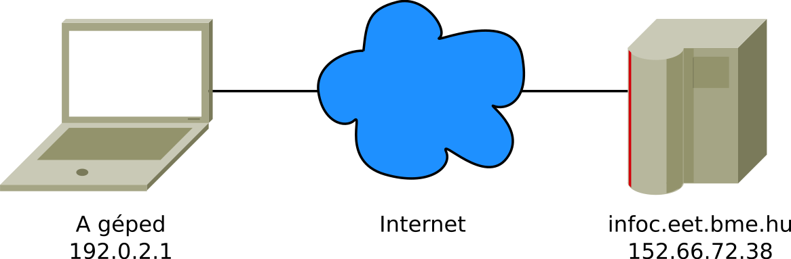
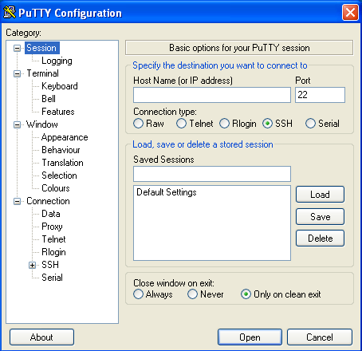
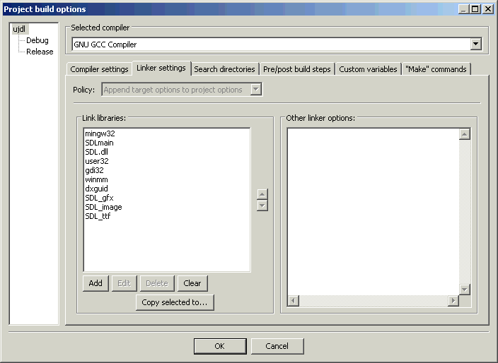

Hogyan működik az Internet?
Czirkos Zoltán · 2015.02.18 · Frissítve: 2015.02.15
Az Internet működéséről röviden, és az SDL_net alapú hálózatprogramozásról.
Ez az írás röviden elmagyarázza az Internet működését biztosító technológiákat – kiemelve közben néhány olyan dolgot, amely a Programozás alapjai I. tárgyban előkerült.
1Az Internetre kötött számítógépek címei
Az Internet egy globális hálózat, ezért minden egyes számítógépnek egyedi címmel
kell rendelkeznie, ha a többivel kommunikálni szeretne. Az Interneten használt címek az
nnn.nnn.nnn.nnn formát öltik, ahol minden nnn szám egy 8 bites, előjel
nélküli egész, azaz a 0…255 értéket veheti fel. Ezt IP címnek (IP address) nevezzük.
Egészen pontosan ezek IPv4 címnek, az Internet Protocol 4-es verziója szerinti azonosítók. Egyre több helyen használják már az IPv6-ot, amelynél a címek nem 32, hanem 128 bitesek. A 32 bites címek egészen egyszerűen mostanra elfogytak, és már évek óta különféle trükköket használnak, hogy több számítógép közösen használhasson egy címet.
Az Internethez csatlakozva a géped valószínűleg automatikusan kapott egy ideiglenes IP címet,
pl. a BME WiFi szolgáltatásán keresztül. Az infoc.eet.bme.hu szervernek pedig fix,
dedikált címe van (úgyis 24 órában be van kapcsolva). Az IP cím látható parancssorból, a
ping programmal, amely amúgy két gép közötti kapcsolat meglétét hivatott ellenőrizni:
rockford:~$ ping infoc.eet.bme.hu PING infoc.eet.bme.hu (152.66.72.38) 56(84) bytes of data. 64 bytes from infoc.eet.bme.hu (152.66.72.38): icmp_req=1 ttl=55 time=38.0 ms
A ping program először feloldja (resolve) a szerver nevét (host name), hogy
megkapja az IP címet (IP address). Ehhez a hálózaton elérhető DNS (Domain Name System) szolgáltatást
használ. Így tudja meg, hogy az infoc.eet.bme.hu címhez a 152.66.72.38
cím tartozik. Ezután annak a gépnek egy PING üzenetet küld, amelyre a szerver
válaszol is. A ping 152.66.72.38 parancsnak ugyanez lenne
az eredménye.
2Csomagok és protokollok
Mi történik akkor, amikor egy számítógép „beszélni” szeretne egy másikkal; például a te
számítógéped, amelynek az IP címe
127.0.0.1, a „hello” üzenetet
szeretné küldeni az infoc-nek, amelynek a címe 152.66.72.38?
A szövegtől előbb el kellene jutni valahogy oda, hogy elektromos jelek jelenjenek meg a vezetéken, vagy rádióhullámokat bocsájtson ki a géped antennája, amiket – haladjanak bármilyen eszközökön keresztül – végül vissza kellene alakítani az üzenetté. Ebben segítenek az üzenetküldési protokollok, egészen pontosan a protokoll felépítmények (protocol stack), ugyanis nem csak egyről van szó. Ezek a protokollok határozzák meg, hogyan kell az üzenet betűit kódolni, hogyan lesznek abból a hálózaton közlekedő adatcsomagok, és hogy azok hogyan válnak végül elektromos jelekké. Ezeket minden számítógép operációs rendszere és hardvere tartalmazza. Nyilvánvalóan a két számítógépnek közös nyelvet kell beszélnie. A használt protokollok azonban eltérnek, attól függően, hogy milyen céljaink vannak az üzenetekkel.
Tekintsünk most el a fizikai szinttől (vezetékek, rádióhullámok), és nézzük csak azokat a protokollokat, amelyeknek jelentősége van a programjaink szempontjából. Nézzünk egy példát. Fogj egy PuTTY-ot: ez nem csak arra jó, hogy más gépekre bejelentkezni, azokon dolgozni lehessen, hanem egy olyan segédprogramnak is használható, amellyel egy tetszőleges hálózati kapcsolat létrehozható.
A host name (or IP address) mezőbe írd be, hogy infoc.eet.bme.hu, a port számhoz
a 80-at. (A portokra azért van szükség, hogy egy gépen egyszerre több hálózati kapcsolat is
létrejöhessen. Ha a cél gépen több szolgáltatás is fut (pl. web szerver és levelezés), akkor a
beérkező adatokról tudnia kell a gépnek, hogy azokat mely programoknak kell megkapniuk. A 80-as
számú porton a web szerver szokott lenni.) A connection type-nak add meg a „raw”-t. Az Open
megnyomása után elvileg csatlakoztál a szerverhez – amely egyelőre szótlan. (Linuxosok: mindez
megoldható az nc infoc.eet.bme.hu 80 parancssor begépelésével.) Írd be az alábbi sort,
és nyomj két entert! Erre letöltődik egy üzenet, amely a szervertől jön (és átirányít a titkosított
oldalra).
GET / HTTP/1.0
Mi történt? Úgy csináltunk, mintha egy web böngésző lennénk, és arra kértük az
InfoC szervert, hogy küldje el a főoldalt. Ehhez először alkalmazási szinten
(ami nézőként mint egy böngésző szintje) megfogalmaztuk a kérést, a HTTP (hypertext transfer
protocol) nyelvén. Ezt a szöveget a PuTTY odaadta az operácios rendszerbe beépített TCP-nek
(transmission control protocol), amely a két alkalmazás (a böngésző és a web szerver) közötti
kapcsolat felépítéséért felel. Ez csomagokra bontja az üzenet szövegét, és továbbadja az IP-nek
(internet protocol), amely a csomagok továbbításáért felel. Innen pedig a csomagok eljutnak a
hardver eszközhöz. A másik oldalon ugyanez történik, csak fordítva: a jeleket fogadó hardver
eszköz az érkező csomagokat az IP-nek adja, amely továbbadja azt a TCP-nek; a TCP előállítja
belőle az adatfolyamot, és végül az alkalmazás (amely a web szerver programja) értelmezi az
üzenetet: GET / HTTP/1.0.
Az egyes protokoll rétegek az üzenethez járulékos információt tesznek, például a címzett IP címét vagy a portszámot. Mire az üzenet a web szerverhez jut, ezeket a fogadó oldalon a protokollegyedek újra eltávolítják. Bár minden protokoll a felette és az alatta lévővel kommunikál közvetlenül, mégis az egyes rétegek számára úgy tűnik, mintha a velük egy szinten lévő társukkal beszélnének: a böngésző közvetlenül a web szerverrel. Amikor telefonon beszélünk, akkor is ehhez hasonló dolog történik: a hangunkból elektromos jel lesz, azokból adatcsomagok, amelyeket a telefon egy központba küld. Onnan a csomagok eljutnak a másik telefonhoz, amely értelmezi azokat, és előállítja az eredetihez hasonló elektromos jelet, amiből végül újra hang lesz. Nekünk mégis olyan, mintha közvetlenül a hívottal beszélnénk.
3Csomagkapcsolt és vonalkapcsolt átvitel
Az Interneten minden kommunikáció adatcsomagokból épül fel. Ezen csomagok mérete néhány tíz bájttól néhány tíz kilobájtig terjedhet. A csomagok továbbításáért az IP (Internet Protocol) felelős. A csomagban a tartalma mellett szerepel annak feladója és címzettje is: a két IP cím.
Fontos tudni azt, hogy az Internet kommunikációja csomagkapcsolt. Ez azt jelenti, hogy az IP számára a csomagok teljesen függetlenek, és semmi információt az IP protokollt kezelő eszközök nem jegyeznek meg a csomagokról. Beérkezik, fogadják, továbbküldik, és el is van felejtve. A csomagok viselkedését leginkább úgy lehet elképzelni, mint egy borítékba tett levél életét: megcímezzük, feladjuk, és a címzett egyszercsak megkapja. Nem garantált sem az, hogy megérkezik, sem az, ha több levelet adunk fel, akkor azok a feladás sorrendjében fognak megérkezni. Nem létezik kapcsolat felépítése és kapcsolat bontása művelet sem: minden levél egymástól független.
Egy fájl továbbításánál megengedhetetlen lenne a darabjainak elveszése vagy összekeveredése. Ilyenkor a vonalkapcsolt átvitel kellene, ami leginkább a telefonáláshoz hasonlít: a kapcsolatnak van állapota, mivel azt a kommunikáció előtt felépítjük, és a kommunikáció után lebontjuk. Egy vonalkapcsolt csatornán a küldött adatok garantáltan eredeti sorrendjükben, hiánytalanul érkeznek. Mivel az Internet természetét tekintve csomagkapcsolt, a vonalkapcsolt (-nak tűnő) kommunikációt egy, az IP fölé helyezett újabb protokollréteggel szokták biztosítani: éppen ez a TCP (transmission control protocol). A TCP a küldendő adatfolyamot csomagokra bontja, a csomagokat megszámozza, és így adja át az IP-nek. Minden csomagra nyugtát vár a címzettől. A címzett pedig a beérkező, számozott csomagokat sorba állítja, hogy abból az eredeti adatfolyamot rekonstruálhassa. Szükség esetén az elvesző csomagok újraküldéséről gondoskodik a TCP. Mindezt a TCP felett kommunikáló alkalmazások számára láthatatlanul történik.
Bizonyos feladatokhoz azonban ezek a szolgáltatások feleslegesek. Ha hangot továbbítunk, nem baj, ha elveszik vagy összekeveredik egy-két csomag. Sokkal nagyobb gond, ha egy kimaradó csomagra várni kezdünk, mert akkor megakad a hang. A TCP által biztosított megbízhatóságnak ára van, ezért ha a programoknak gyors üzenetküldésre van szükségük, amelynél azonban nem fontos a 100%-os megbízhatóság, akkor UDP-t (user datagram protocol) szokás használni. Ez egy nagyon egyszerű kis protokoll, amely alig biztosít többlet szolgáltatásokat az IP-hez képest: lényegében csak annyit, hogy ellenőrző összeget tesz a csomagba (hogy legalább a hibás átvitelt detektálni lehessen).
Érdekesség: a mobiltelefonoknál a hang 4,6 ezredmásodperces darabokra van bontva. Minden csomag egy ilyen hang darabkát tartalmaz. A fogadó oldal, ha azt érzékeli, hogy egy csomag kimaradt, egyszerűen az előtte lévőt duplázza. Elsőre talán meglepő, de ezt az emberi fül észre sem veszi, mert ennél sokkal lassabban változnak a beszédben képzett hangok. Ha a kimaradó csomagok helyét a telefon csönddel helyettesítené, az sokkal zavaróbb lenne!
4A portok és kapcsolatok
Azért, hogy egy számítógépen ne csak egy hálózati program vagy szolgáltatás futhasson, minden TCP és UDP csomagot egy ún. port számmal látnak el. Ez egy 16 bites, előjel nélküli egész szám (0…65535). Ilyen port szám tartozik az üzenet küldőjéhez és az üzenet címzettjéhez is.
UDP-nél ennek a működése a következő. Ha egy program adatot szeretne fogadni UDP-n, akkor
választ egy port számot, pl. az 1234-et. Ezt a választását jelzi az operációs rendszernek.
Ilyenkor a megfelelő IP címre ÉS port számra küldött UDP csomagokat az a program fogja megkapni.
A küldő oldal (másik gép) is választ egy port számot (vagy megkéri az operációs rendszert, hogy
válasszon találomra egy szabad portot), és úgy küldi el az üzenetet. Így kapcsolódik össze a két
program: IP1:port1 és IP2:port2 között mennek a
csomagok. Az egyik irányban IP1:port1 a feladó,
IP2:port2 a címzett (ezek az adatok szerepelnek az UDP fejlécével ellátott csomagban), a másik
irányban pedig fordítva.
TCP-nél egy kicsit bonyolultabb, hiszen ott minden kapcsolatot meg kell különböztetni a vonalkapcsolt jelleg miatt. Ezért ott nem csak adatcsomagok vannak, hanem vezérlőcsomagok is. Itt is először az egyik gép (nevezzük szervernek) nyit egy portot, ami azt jelenti, hogy azon a porton fogadni tudja a bejövő kapcsolatokat. Ezután a hozzá csatlakozó (a kliens) elindítja a kapcsolódási folyamatot egy olyan adatcsomaggal, amelyben a SYN jelzésű bit (ez a csomag 13. bájtjának 6. bitje) 1-be van állítva: synchronize. Erre a szerver válaszol neki egy SYN-ACK (synchronize+acknowledge) csomaggal, amelyben a 13. bájt 3. bitje is 1-be van állítva; mire a kliens egy újabb ACK csomaggal válaszol. Amint ez a 3-way handshake nevű folyamat megtörtént, a kapcsolat él, a kommunikáció bármelyik irányban történhet. A kapcsolat lebontása hasonlóan történik, csak FIN (finish) jelzésű csomagokkal. A TCP kapcsolatok vezérléséhez használt állapotgép állapotátmeneti gráfja megtalálható az erről szóló Wikipedia oldalon is.
A programunkban ezekkel a vezérlő üzenetekkel nem kell foglalkozni, kezeli őket az operációs
rendszer. Egy kapcsolat felépítése szinte annyiból áll, mint egy fájl megnyitása. Egy
connect() függvényhívás után, ha az sikerült, kapunk egy ún. socket-et, amelybe írhatunk,
és amelyből olvashatunk. Amint a kapcsolat létrejött, a kliens/szerver megkülönböztetésnek
sincsen már semmi jelentősége. A különbség a kettő között csak abban áll, hogy melyik fél
kezdeményezi a kapcsolatot. Azért szokás a két felet kliensnek és szervernek nevezni, mert
általában a kliens kapcsolódik a szerverhez azért, hogy annak valamilyen szolgáltatásait elérje,
például az ott tárolt fájlokat letöltse.
5Hálózatprogramozás
A hálózat programozását lehetővé tevő API (application programming interface) először a BSD operációs rendszerben jelent meg. Ezeket a függvényeket mindegyik Unix típusú rendszer tartalmazza, és a Windows is átvette. Bár a kétféle rendszer függvényeit szinte ugyanúgy kell használni, apró különbségek azért vannak: hogyan jelzik a hibát, hogyan kell lekérdezni, pontosan milyen hiba történt, melyik header fájlokat kell beilleszteni stb. Ha olyan programot szeretnénk írni, amelyik minden operációs rendszeren egyformán működik, érdemes a grafikához hasonlóan a hálózat programozásához is egy alkalmas függvénykönyvtárat használni, amely ezeket a különbségeket elfedi. Ilyen például az SDL_net, amelynek Code::Blocks-hoz lefordított változata letölthető innen: SDL_net-1.2.infoc.zip.
A telepítése hasonlóan történik, mint az SDL többi részéé, csak ehhez az SDL_net nevű könyvtárat kell a programhoz linkelni. Ubuntu Linuxon csomagból elérhető. A CodeBlocks-ban a Project menü Build Options menüpontja alatt kell beállítani, hogy az SDL_net függvénykönyvtár is a programhoz legyen linkelve. Ebben az ablakban kell az SDL_net-et is hozzáadni a többi mellé:
Egy egyszerű szerver
Alább egy példaprogram látható egy szerver létrehozására. Ez a szerver egyetlen egy
bejövő kapcsolatot fogad (többet nem), utána vár egy üzenetet, aminek a fogadása
után küld is egyet. Ez kipróbálható a PuTTY programmal is: ha fut a lenti szerver,
akkor a localhost-ra (127.0.0.1) kell csatlakozni, a 2000-es portra.
Gyakran pongyolán egy gép IP címéről beszélünk. Igazából ez egy félreértés; nem a számítógépnek van IP címe, hanem a hálózati eszköznek. Minden operációs rendszer szokott egy 127.0.0.1 IP című, fiktív hálózati eszközt is biztosítani: ezen az ún. loopback eszközön a számítógép saját magát látja. Ez nagyban megkönnyíti a hálózatos programok tesztelését is, hiszen így nincs több számítógépre szükség.
#include <stdio.h>
#include <string.h>
#include <SDL_net.h>
int main(int argc, char *argv[]) {
/* ket socket; az egyik fogadja a bejovo kapcsolatot,
* a masikon meg lehet kommunikalni a klienssel, miutan megerkezett. */
TCPsocket szerver_socket, kliens_socket;
/* ip cimeket, port szamokat tarolo strukturak. */
IPaddress ip, *remoteIP;
int olvasott, kuldendo;
enum { BUFSIZE = 512 };
char buffer[BUFSIZE+1];
char sendbuf[BUFSIZE];
#ifdef __WIN32__
freopen("CON", "w", stdout);
freopen("CON", "w", stderr);
#endif
/* az sdl_net inicializalasa. */
if (SDLNet_Init() < 0) {
fprintf(stderr, "SDLNet_Init: %s\n", SDLNet_GetError());
return 1;
}
/* nev feloldasa lenne; itt csak arra hasznaljuk, hogy az ip nevu
* strukturaba beirjuk, hogy a 2000-es porton fogjuk varni a bejovo
* kapcsolatokat. */
if (SDLNet_ResolveHost(&ip, NULL, 2000) < 0) {
fprintf(stderr, "SDLNet_ResolveHost: %s\n", SDLNet_GetError());
return 1;
}
/* bejovo kapcsolatok fogadasanak inditasa a 2000-es porton. */
if ((szerver_socket = SDLNet_TCP_Open(&ip)) == NULL) {
fprintf(stderr, "SDLNet_TCP_Open: %s\n", SDLNet_GetError());
return 1;
}
printf("Szerver fut!\n");
/* varunk a bejovo kapcsolatra. ha van fogadhato kapcsolat, akkor
* fogadja a fuggveny; ha nincs, null pointerrel ter vissza. */
while ((kliens_socket = SDLNet_TCP_Accept(szerver_socket)) == NULL) {
printf("Varok a bejovo kapcsolatra...\n");
SDL_Delay(500); /* fel masodperc varakozas */
}
/* sikerult: mostantol a kliens_socket nevu socketen keresztul
* erjuk el azt a klienst, akinek a kapcsolatat fogadtuk. */
/* bezarjuk a bejovo kapcsolatokat fogado portot. csak egyet fogadunk most. */
SDLNet_TCP_Close(szerver_socket);
/* nezzuk, mi a kliens ip cime es port szama. */
if ((remoteIP = SDLNet_TCP_GetPeerAddress(kliens_socket))) {
/* a host es a port valtozok taroljak a cimet es a portjat.
* de network byte orderben, azaz elobb a nagy, utana a kicsi
* helyierteku bajtokat. mivel a mi szamitogepunk lehet, hogy
* nem igy mukodik, ezert a ket fuggvennyel a sajat processzorunk
* altal hasznalt formatumra alakitjuk a ket szamot. az ip
* cim 4 bajtbol all, az 32 bit, a port szam meg 16 bites. */
Uint32 iphost = SDLNet_Read32(&remoteIP->host);
Uint16 porthost = SDLNet_Read16(&remoteIP->port);
printf("Kapcsolodo kliens, ip cime: %u.%u.%u.%u, port szama: %u\n",
iphost>>24 & 0xff, iphost>>16 & 0xff, iphost>>8 & 0xff, iphost>>0 & 0xff, porthost);
}
/* adatra varunk; az olvasott adatot az fread()-hez hasonloan ez a fuggveny
* a tombbe teszi. a harmadik valtozo adja meg, hogy maximum hany bajtot
* olvasson a fuggveny. ha barmennyi bajt jon, azt beirja a tombbe, es
* visszater egy pozitiv ertekkel. ez lehet kevesebb is, mint bufsize! */
if ((olvasott = SDLNet_TCP_Recv(kliens_socket, buffer, BUFSIZE)) > 0) {
/* sztringet csinalunk belole: rakunk egy nullat a vegere */
buffer[olvasott] = '\0';
printf("Kliens mondja: %s\n", buffer);
/* most osszerakunk egy uzenetet a kliens szamara */
sprintf(sendbuf, "Az uzeneted %d bajtbol all.\n", olvasott);
printf("Kliensnek kuldom: %s\n", sendbuf);
kuldendo = strlen(sendbuf);
/* es elkuldjuk. ha a visszateresi ertek kevesebb, mint az elkuldendo
* bajtok szama, akkor valami hiba tortent */
if (SDLNet_TCP_Send(kliens_socket, sendbuf, kuldendo) < kuldendo) {
fprintf(stderr, "SDLNet_TCP_Send: %s\n", SDLNet_GetError());
}
} else {
/* ha az olvaso fuggveny 0-t jelez, az azt jelenti, a masik fel
* bezarta a kapcsolatot. ha negativ, akkor pedig megszakadt.
* ilyenkor be kell zarni, hogy az sdl_net is felszabaditsa a
* maga kis adatstrukturait; de ez ugyis mindjart megtortenik. */
fprintf(stderr, "SDLNet_TCP_Recv: %s\n", SDLNet_GetError());
}
/* bezarjuk a kapcsolatot a kliens fele */
SDLNet_TCP_Close(kliens_socket);
SDLNet_Quit();
return 0;
}
Egyszerű kliens
Egy egyszerű kliens pedig valahogy így nézhet ki. Ez létrehoz egy kapcsolatot, utána kér egy sort a felhasználótól. Ezt elküldi a szervernek, aztán vár egy üzenetre, amit a szerver küld.
#include <stdio.h>
#include <stdlib.h>
#include <string.h>
#include "SDL_net.h"
#define CONNECT_TO_ADDR "localhost"
#define CONNECT_TO_PORT 2000
int main(int argc, char **argv) {
IPaddress ip;
TCPsocket socket;
enum { BUFSIZE = 512 };
char kimeno[BUFSIZE];
char bejovo[BUFSIZE + 1];
int kuldendo, fogadott;
#ifdef __WIN32__
freopen("CON", "w", stdout);
freopen("CON", "w", stderr);
#endif
/* SDL_net inicializalasa */
if (SDLNet_Init() < 0) {
fprintf(stderr, "SDLNet_Init: %s\n", SDLNet_GetError());
return 1;
}
/* Nezzuk meg az IP cimet a gepnek, ahova csatlakozunk */
if (SDLNet_ResolveHost(&ip, CONNECT_TO_ADDR, CONNECT_TO_PORT) < 0) {
fprintf(stderr, "SDLNet_ResolveHost: %s\n", SDLNet_GetError());
return 1;
}
/* Nyissunk egy TCP kapcsolatot */
if ((socket = SDLNet_TCP_Open(&ip)) == NULL) {
fprintf(stderr, "SDLNet_TCP_Open: %s\n", SDLNet_GetError());
return 1;
}
printf("Egyszeru kliensprogram\n\n");
printf("Irj be valamit, elkuldom a szervernek:\n");
fgets(kimeno, BUFSIZE, stdin);
/* meg kell adni, hany bajtot kuldunk */
kuldendo = strlen(kimeno);
if (SDLNet_TCP_Send(socket, kimeno, kuldendo) < kuldendo) {
/* ha kevesebb bajt kuldodott, mint amennyit kertunk, az hiba -
* nem tudjuk folytatni innen */
fprintf(stderr, "SDLNet_TCP_Send: %s\n", SDLNet_GetError());
} else {
/* az adatok rendben elkuldve, varjunk a valaszra. */
fogadott = SDLNet_TCP_Recv(socket, bejovo, BUFSIZE);
if (fogadott > 0) {
/* lezarjuk 0-val, hogy sztring legyen belole, es ki
* tudjuk irni printf %s-sel */
bejovo[fogadott] = '\0';
printf("Valasz: %s\n",bejovo);
}
else if (fogadott == 0) {
/* nem sikerult adatot fogadni. ha 0 volt a visszateresi
* ertek, a masik oldal bezarta a kapcsolatot. */
} else {
/* ha negativ, hiba tortent! */
fprintf(stderr, "SDLNet_TCP_Recv: %s\n", SDLNet_GetError());
}
}
/* bezarjuk a kapcsolatot */
SDLNet_TCP_Close(socket);
SDLNet_Quit();
return 0;
}
A TCP programozás buktatói
Van néhány buktató, amire érdemes figyelni a hálózatprogramozás során.
UDP használata esetén nagyon kényelmes, hogy amit egy üzenetként küldünk:
SDLNet_UDP_Send(), az egy üzenetként is fog megérkezni:
SDLNet_UDP_Recv(). Viszont nem lehetnek túl nagyok a csomagjaink. Elvileg a
legnagyobb üzenet 65507 bájtos, azonban ez sem garantált, hogy mindenhol át fog jutni. Jobb egy
kilobájt alatt maradni.
Nem így a TCP-nél. Egy nyitott kapcsolaton tetszőlegesen sok adatot küldhetünk. Azonban az
nem garantált, hogy amit egy SDLNet_TCP_Send() hívással küldtünk el az egyik
oldalon, azt a túlvégen egyetlen SDLNet_TCP_Recv() hívással kapjuk meg. Mivel a TCP
az adatfolyamot csomagokra bontja, előfordulhat, hogy egy nagy, egészben elküldött blokk kis
részletekben érkezik meg. Ha különálló üzeneteket kell küldeni, akkor az üzenetek elválasztását
nekünk kell megoldanunk – például úgy, hogy valamelyik karaktert, a \0-t vagy a
\n-t használjuk erre, esetleg bináris tartalmú üzenetek esetén előbb elküldjük az
üzenet hosszát, utána pedig magát az üzenetet. A függvények nem sztringekkel dolgoznak, hanem
bájtsorozatokkal, tehát az olvasott blokkok végén nem lesz lezáró nulla. A fenti programokban
ezért vannak külön lezárva nullával a karaktertömbök, ahova a beérkező üzenet került.
Figyelni kell még arra is, hogy a fogadást kezdeményező, _Recv() függvények
blokkolják a programot, ahogyan egy scanf()-nél is megáll a végrehajtás. Ha ez
zavaró, akkor az SDL_net Socket Set-jeit
érdemes használni: ennél egy halmazba betehetjük a figyelendő, nyitott kapcsolatainkat, és
az SDLNet_CheckSockets()
függvénnyel várhatunk arra (egy meghatározott ideig maximum), hogy történjen valami. Ezután egyesével
lekérdezhetjük mindegyik kapcsolatnál, hogy történt-e rajta valami; vagyis hogy szabad-e rá
SDLNet_TCP_Recv() függvényt hívni anélkül, hogy az blokkolná a program további
futását.
6Útválasztás az Interneten
Láttuk, hogy az Interneten az összes kommunikáció csomagkapcsolt formában történik.
Az egyes végpontok, számítógépek által elküldött csomagok hosszú utat tesznek meg a céljukig.
Például a BME WiFi-n küldött csomag előbb eljut a WiFi hálózatot biztosító hozzáférési
pontig (access point), onnan tovább különböző hálózati eszközökön válószínűleg eljut az
R épületbe, ahol a BME net központja van. Innen továbbküldik az Internet gerinchálózatára
(backbone), és így tovább. Ez könnyen látható a tracert (Unixokon: traceroute)
programmal:
traceroute to infoc.eet.bme.hu (152.66.72.38), 30 hops max, 60 byte packets 1 192.168.1.1 (192.168.1.1) 0.851 ms 0.887 ms 0.950 ms 2 catv-80-98-191-254.catv.broadband.hu (80.98.191.254) 13.115 ms 26.418 ms 41.688 ms 3 catv-89-135-217-158.catv.broadband.hu (89.135.217.158) 19.073 ms 19.263 ms 19.478 ms 4 84.116.240.85 (84.116.240.85) 19.619 ms 19.613 ms 19.767 ms 5 84.116.240.138 (84.116.240.138) 31.514 ms 31.767 ms 31.917 ms 6 tg0-1-0-6.rtr1.vh.hbone.hu (195.111.97.101) 25.914 ms 14.588 ms 21.918 ms 7 tg2-1.rtr.bme.hbone.hu (195.111.97.102) 21.796 ms 23.379 ms 23.403 ms 8 xge10-1.taz.net.bme.hu (152.66.0.125) 33.358 ms 33.594 ms 33.661 ms 9 xge5-4.ixion.net.bme.hu (152.66.0.122) 32.998 ms 33.029 ms 33.085 ms 10 xge5-4.quark.net.bme.hu (152.66.0.71) 78.614 ms 85.568 ms 85.857 ms
Itt a látható címek nagy része egy hálózati útválasztó (router), amelynek az a dolga, hogy a hozzá beérkező csomagokat valamilyen irányba továbbküldje. Ezek az útválasztók az IP címek tartományaival dolgoznak, méghozzá prefixekkel: egy útválasztási táblázat (routing table) alapján az adott bitekkel kezdődő című csomagokat a meghatározott irányba küldik. Ilyen útválasztást maguk a végpontok, a számítógépek is végeznek, mivel minden számítógépnek akár több hálózati eszköze lehet, és a csomagokról az operációs rendszernek is tudnia kell, hogy azokat hova küldje tovább. A táblázatok minden sora tartalmaz egy cél tartományt, és egy hozzá tartozó maszkot (netmask), amely egy 32 bites, 1-esekkel kezdődő szám:
Destination Gateway Genmask Flags Metric Ref Use Iface 127.0.0.0 0.0.0.0 255.0.0.0 U 0 0 0 lo 152.66.72.0 0.0.0.0 255.255.255.224 U 0 0 0 eth0
Egy adott irányba küldéshez az szükséges, hogy a csomag cél IP címe az 1-esek helyén
megegyezzen a táblázat sora által kiválasztott iránnyal. Vagyis a fenti táblázat
szerint azokat a csomagokat, amelyek címe az első 27 bitben (255.255.255.224=FFFFFFE0)
megegyeznek a 152.66.72.0 címmel, az eth0 eszköz felé kell küldeni.
Ezt meg lehet fogalmazni C-ben is:
if (csomag_celja & netmask == cel_tartomany & netmask) ...
Ezt a vizsgálatot kell elvégezni minden egyes csomagnál. A fenti táblázat egyébként tartalmazza a fiktív loopback (lo) eszközt is: minden, aminek a címe 127-tel kezdődik (maszk=FF000000, vagyis az első bájtban kell megegyezzen), az ehhez kerül. Ezért látja ezen keresztül a számítógép saját magát.